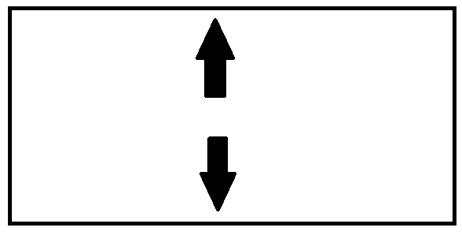
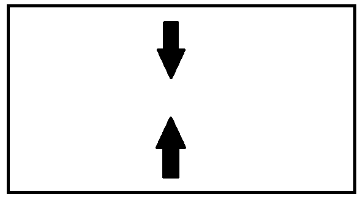

POWRÓT
1. Wy³aczyæ lub w³±czyæ touchpad mo¿na za pomoca klawiszy funkcyjnych z oznaczeniem d³oni, prostok±ta i znaku stopu
2.Gdy wci¶niemy Lewa Strone Touchpada komputer zachowa siê tak jakby¶my nacisnêli lewy przycisk myszy, a gdy wci¶niemy prawa stronê touchpada komputer zachowa siê tak jakby¶my wcisnêli prawy przycisk myszy
3. Gdy wykonamy taki ruch palcami na Touch padzie przybli¿ymy ekran:

Natomiast gdy wykonamy taki ruch na touchpadzie oddalimy ekran:

4. Gdy po³o¿ymy dwa palce na touchpadzie i bêdziemy przewijaæ w góre lub w dó³ bêdziemy mogli scrollowaæ dokument b±d¼ stronê
5.Gdy po³o¿ymy 3 palce na Touchpadzie i bêdziemy je przesuwaæ w lewo b±d¼ w prawo bêdziemy mogli w szybko i ³atwy sposób przeskakiwaæ miêdzy aplikacji (zamiast ALT + TAB)
6.Gdy po³o¿ymy 3 palce na touchpadzie i przesuniemy nimi w dó³ przejdziemy szybko do pulpitu minimalizuj±c widoczne programy natomiast gdy przesuniemy nimi w górê szybko otworzymy wszystkie zminimalizowane programy
7.By odpaliæ centrum akcji wystarczy w jednym momencie po³o¿yæ 4 palce na touchpadzie
8.By przemieszczaæ siê miêdzy pulpitami wystarczy po³o¿yæ 4 palce na touchpadzie i przesuwaæ nimi w prawo lub lewo
9.By szybko odpaliæ wyszukiwarkê systemu windows wystarczy po³o¿yæ 3 palce na touch padzie (zamiast WINDOWS+S)
Projekt realizowany na olimpiadê "Zwolnieni z Teorii" Nie ma twojego problemu? Skontaktuj siê z nami poprzez formularz
Wszystkie prawa zastrze¿one Kopiowanie i rozpowszechnianie bez zgody Nak³adka E-Pomocy zabronione